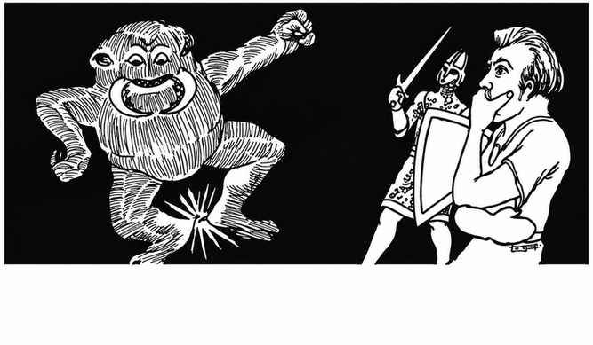
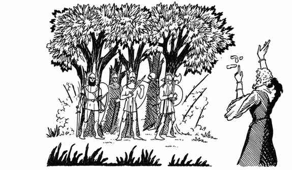
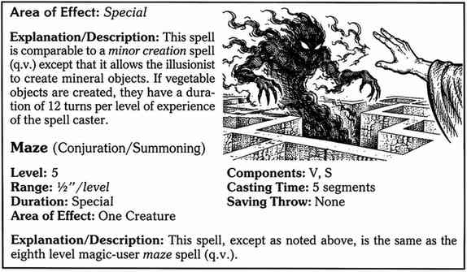

幻术师法术说明 · Notes Regarding Illusionist Spells
幻术师法术少于魔法师法术，且有部分重复。七环法术表包含所有一环魔法师法术，其中若干法术被视为一个七环法术。幻术师的幻象会随等级提升而逐渐强大，幻影也会获得某种实体；幻术师使用的其他类型法术同样威力强大（参见幻象杀手、幻影塑形术、棱彩喷射术）。



部分幻术师法术没有言语（V）成分，而且通常比其他职业的法术需要更少材料成分。显著的例外是观视术，它需要大量材料。